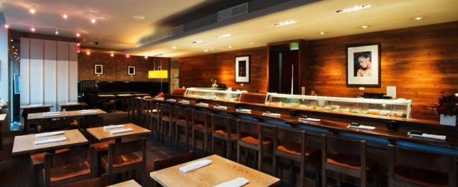

Here are the top 10 places to have omakase in New York City
SUSHI OF GARI
Masatoshi "Gari" Sugio has been serving up some of the best pieces of sushi in NYC since 1997. So, it is no surprise that Gari's tasting menu - featuring seasonal items of the day - is one of the best in the city. Though simple and laid-back in decor, the restaurant's UES flagship location continues to be the most popular. Some of Gari's famous pieces of sushi include the tuna with tofu sauce and the salmon with sautéed tomatoes and onions.
Omakase: $85-$90
Sushi of Gari 46, 347 W 46 Street, New York
BOND ST SUSHI
This East Village hotspot is equally known for its chic decor as it is for its unique and creative take on Japanese cuisine. Guests dining at Bond St can choose between the Chef's Selection starting at $40 or the full course tasting menu starting at $80.
Omakase: $40-$120
Bond St Sushi, 6 Bond Street, New York
SUSHI NAKAZAWA
Ever since this 10-seat sushi bar opened in August, it's been pretty difficult to get a reservation, and for good reason. Chef Daisuke Nakazawa is one of Jiro's former apprentices and has brought his world-renowned techniques to NYC. Nakazawa's 20-course tasting menu eloquently demonstrates his life-long passion and knowledge of fish, redefining the way most Americans think of sushi.
Omakase: $120 in the dining room, $150 at the sushi bar
Sushi Nakazawa, 23 Commerce Street, New York